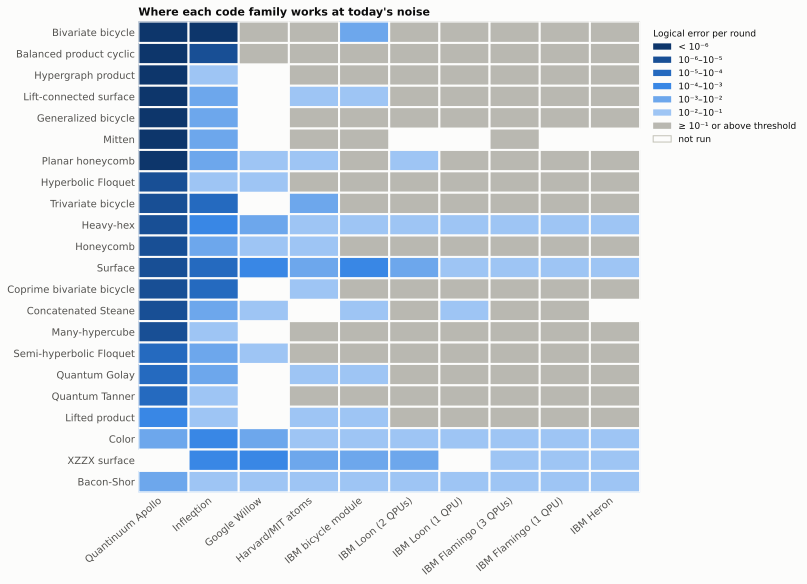
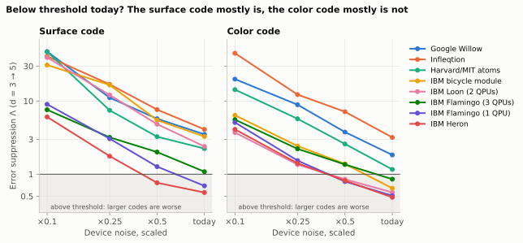
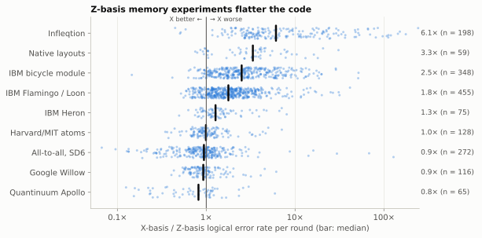
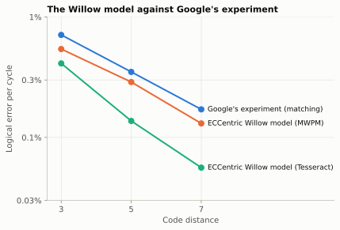
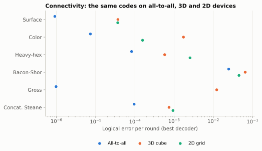
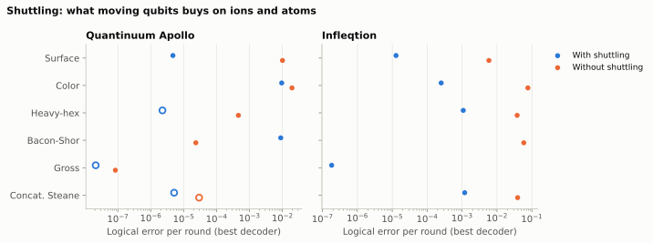
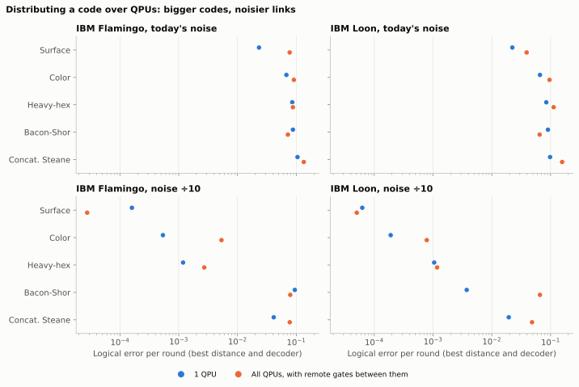
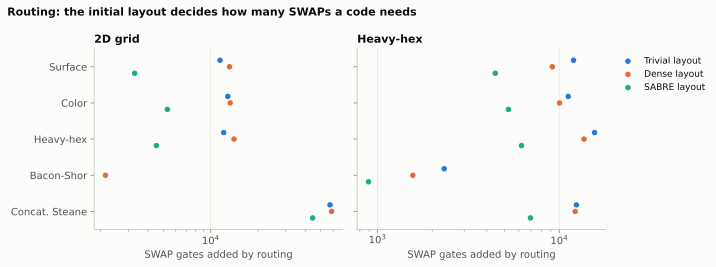
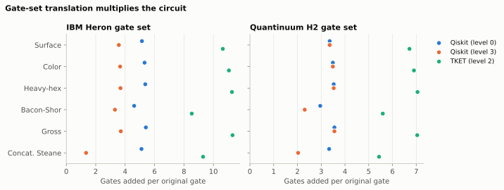
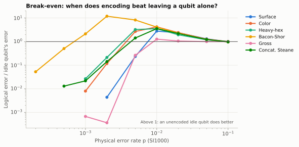

Results
Findings
What the ECCentric dataset shows: every code on every device model, under each device's own noise and scaled versions of it, with every applicable decoder. Each figure comes with the values it plots (CSV) and a link to the results behind it in the Explorer.
Built 2026-11-20 from 35,374 results (dataset schema 1, ECCentric commit bf55e7f) by python -m eccentric.figures. The list of figures is figures/manifest.json.
- FeaturedCode families × devices at today's noise
- FeaturedRouting vs native layout for bivariate bicycle codes
- FeaturedError suppression as device noise is scaled
- FeaturedDecoder accuracy against decoding time
- FeaturedX-basis against Z-basis memory
- FeaturedThe Willow model against Google's experiment
- Paper experimentConnectivity
- Paper experimentShuttling on trapped-ion and neutral-atom devices
- Paper experimentSingle vs multi-QPU execution
- Paper experimentRouting overhead by initial layout
- Paper experimentGate-set translation overhead
- Paper experimentBreak-even against an idle qubit
Featured findings
Code families × devices at today's noise
Trapped ions protect the most code families: below 10⁻³ per round, 19 families on Quantinuum Apollo against 0 on IBM Heron.

Lowest per-round logical error rate of any code of the family, any distance and decoder, Z-basis memory, under the device's own noise model. Where no logical error was seen, the 95% upper bound is used. IBM devices use the Flamingo noise model, Heron its own.


Routing vs native layout for bivariate bicycle codes
Routed onto IBM's heavy-hex devices, bivariate bicycle codes are 42× to 228,237× worse than on a layout that gives each of their checks its couplers.

Best logical error rate over all decoders, Z-basis memory, Flamingo noise with gate errors ÷10 and T1/T2 ×3 on both. Routed: the better of IBM Flamingo (3 QPUs) and Loon (2 QPUs).

Error suppression as device noise is scaled
At today's noise, the surface code is below threshold on 6 of 8 device models and the color code on 3. IBM Heron needs about 40% of its noise for either.

Λ is the per-round logical error rate at d = 3 divided by that at d = 5 (d rounds, best decoder); Λ > 1 means a larger code helps. Every error probability of the device's noise model is scaled by the factor on the x-axis; the compiled circuit is the same at every scale.


Decoder accuracy against decoding time
BP-OSD, the usual choice for qLDPC codes, is as accurate as the best decoder on only 39% of configurations; Tesseract on 99.8%, and at 3.2× less median time per shot.

4,257 configurations below threshold (best logical error rate < 0.4), each decoded by at least three decoders. A decoder counts as good enough when its 95% interval reaches the best decoder's. Times are per shot on one CPU core, sampling and building the decoder included; MWPM, correlated MWPM and Chromobius, which take microseconds per shot, are timed with 10^5 shots on the same circuits. Decoders with fewer than 100 configurations are left out. Tesseract's timeouts (no result) are not counted, which favours it on the largest circuits.

X-basis against Z-basis memory
Measured in the X basis, 72% of configurations do worse than in the usual Z basis; on Infleqtion by a median 6.1×.

1,716 configurations run in both bases with the same compiled circuit; per basis, the lowest per-round logical error rate over the decoders run in both. Upper bounds are left out.


The Willow model against Google's experiment
With matching decoders on both sides, the model is 1.2–1.3× optimistic and reproduces the error suppression (Λ = 2.21 against Google's 2.05).

Rotated surface-code memory over 10 cycles on the Willow device model (real_willow noise). Google: ensembled matching decoder, Nature 638, 920 (2025), Table S1. The gap to Tesseract is the decoder: a stronger decoder lowers the same circuit's error by another 2×.


The paper's experiments, on the current benchmark
The experiments of the SIGMETRICS'26 paper (topology, hardware technologies, distributed QPUs, routing, gate-set translation, break-even), redrawn from the current version of the benchmark: more decoders, more shots, and refined device models. The figures as published are in the paper.
Connectivity
Restricting connectivity raises the logical error per round by a median 21× on a 2D grid and 24× on a 3D cube over all-to-all: the third dimension does not help.

SI1000 noise at p = 0.002, the largest distance that fits on all three devices, best of all decoders, Z-basis memory; hollow markers are 95% upper bounds (no logical error seen). Codes at or above threshold on a device are not drawn. Sweep slice paper_topology.


Shuttling on trapped-ion and neutral-atom devices
Shuttling lowers the logical error rate for 5 of 6 codes on Infleqtion and 4 of 5 on Quantinuum Apollo.

Each device under its own noise model, with and without moving qubits, at the largest distance both versions fit; best of all decoders. Hollow markers are 95% upper bounds (no logical error seen); a code at or above threshold on one version is not drawn. Sweep slice paper_topology.


Single vs multi-QPU execution
Spreading a larger code over several QPUs connected by remote gates does not pay off: a single QPU gives the lower logical error rate in 75% of code and device combinations.

Each code at the best distance that fits on one QPU, or on all QPUs with remote gates between them, best of all decoders. Today's IBM Flamingo noise, and the same with gate errors ÷10 and T1/T2 ×3. Hollow markers are 95% upper bounds. Sweep slice paper_dqc.


Routing overhead by initial layout
Choosing the initial layout with SABRE instead of placing qubits in order needs a median 2.5× fewer SWAPs; no layout removes them.

SWAPs Qiskit's routing adds to each code's circuit on a 289-qubit 2D grid and a heavy-hex device, best routing method for each initial layout. Codes that need no SWAPs on a device are not drawn. Source: experiment_results/Routing_grid, Routing_hh.


Gate-set translation overhead
Even with optimization, translating a code's circuit to native gates adds 1.3–3.7 gates for every gate of the circuit.

Gates added when translating each code's circuit (all-to-all device) to the IBM Heron and Quantinuum H2 native gate sets. Source: experiment_results/Translation.


Break-even against an idle qubit
Encoding pays off only at low noise: the gross code stays ahead of an unencoded qubit idling for the same time up to p = 0.005, the Bacon-Shor code only up to p = 0.0005.

Logical error rate of each code's memory over the idle error of one unencoded qubit for the same duration, all-to-all device, SI1000 noise, BP-OSD, 10,000 shots. Points with no logical error are not drawn. Source: experiment_results/Accumulated.


All figures are built by python -m eccentric.figures in the
ECCentric repository and copied here on the 1st and 15th of
every month. How the logical error rates are measured is described on the Method page.